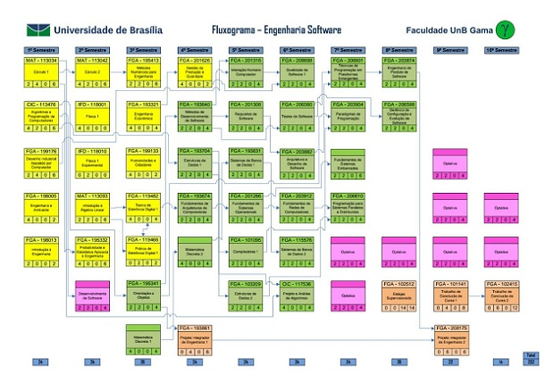
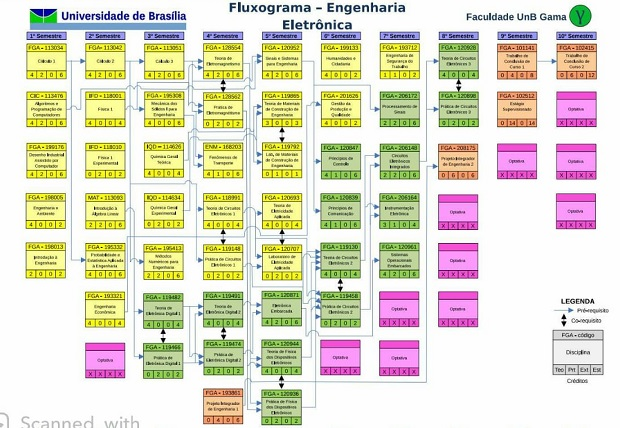
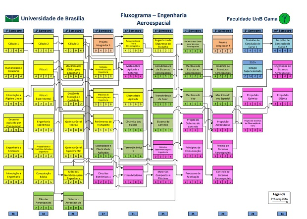
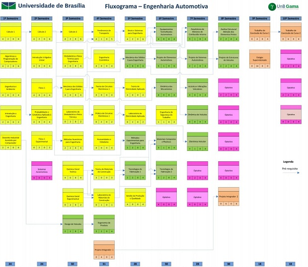

Engenharia de Software
Informações Gerais
- Habilitação:Bacharelado em Engenharia de Software
- Créditos mínimos para formatura: 232 créditos
- Duração:5 Anos
- Unidade Acadêmica: Faculdade UnB Gama
- Turno: Diurno
- Numero de semestres: 9(mínimo)/16(máximo). Recomentado:10
- Coordenador: Fernando William Cruz
- Contatos: fwcruz@unb.br / (61)3107-8908
O que é o curso
A Engenharia de Software é a integração dos princípios da Matemática e Ciência da Computação com as práticas da Engenharia, com objetivo de desenvolver modelos sistemáticos e técnicas confiáveis para a produção de software de alta qualidade.
A formação em Engenharia de Software contempla fundamentos da Computação: que apoiam o projeto e construção de produtos de software; Fundamentos de Engenharia e Matemática; de funções a estruturas algébricas, de métodos empíricos e técnicas experimentais a engenharia econômica e gestão da produção (desde planejamento a execução e controle); Modelagem e análise de software: de fundamentos de modelagem a elicitação, análise, especificação e validação de requisitos; Projeto de software: de conceitos, a arquitetura, interface humano-computador, projeto detalhado, ferramentas e avaliação; Verificação e validação de software: de fundamentos de revisão e revisões, testes, análise e reporte de problemas; Evolução/manutenção: de processos a atividades de evolução/manutenção de software; Processos de software: de conceitos e cultura a padrões, processos e garantias de produto e processo de software; Gerenciamento de software: de conceitos de gerenciamento, planejamento, organização e controle de projeto a gerenciamento da configuração do software; Práticas profissionais: dinâmica de grupo, psicologia a competências conversacionais e profissionalismo.
Mercado de Trabalho
O Engenheiro de Software se insere no mercado de empresas do setor privado, de instituições e órgãos da Administração Pública Direta, Indireta ou Entes Sociais Autônomos; Instituições de Pesquisa e desenvolvimento de soluções de engenharia de software.
Área de Atuação
O Engenheiro de Software atua no projeto, desenvolvimento, implantação e evolução de softwares complexos e seguros, tolerantes a falhas e com usabilidade e acessibilidade. Em sua atuação, ele desenha, especifica, programa e experimenta soluções que atendam às necessiades do mercado, da sociedade, das organizações e dos indivíduos, de acordo com suas capacidades e limitações, considerando os impactos organizacionais, técnicos, sociais e emotivos.
Fluxograma

Engenharia Eletrônica
Informações Gerais
- Habilitação:Bacharelado em Engenharia Eletrônica
- Créditos mínimos para formatura: 243 créditos
- Duração:5 Anos
- Unidade Acadêmica: Faculdade UnB Gama
- Turno: Diurno
- Numero de semestres: 10(mínimo)/16(máximo). Recomentado:10
- Coordenador: Fabiano Araujo Soares
- Contatos: fabianosoares@unb.br; (61) 3107-8904 / 3107-8907
O que é o curso
A Engenharia Eletrônica utiliza os princípios físicos da eletricidade e do magnetismo para a construção, a partir de componentes elétricos e eletrônicos, de uma vasta gama de equipamentos. Uma parte dos trabalhos concentra-se na eletrônica analógica, que envolve aplicações como captação, gravação, amplificação e reprodução de sinais sonoros e de vídeo. Entretanto, hoje, uma parte substancial do trabalho está ligada à eletrônica digital e, particularmente, aos microcomputadores e microprocessadores. Com essa tendência, a programação de alto e de baixo nível são componentes essenciais na formação do Engenheiro Eletrônico.
Perfil Profissional
O profissional em Engenharia Eletrônica deve ser proficiente em várias áreas do conhecimento, como a Matemática, a Física, a Estatística e os tópicos específicos da Eletrônica. Deve também ter conhecimentos básicos acerca de outras engenharias, como a Engenharia Civil e a Engenharia Mecânica.
O Engenheiro Eletrônico deve ter um bom conhecimento dos diversos materiais elétricos e magnéticos usados na área, como a programação de microcomputadores. A eletrônica e os microprocessadores estão causando uma revolução na eletrônica embarcada, tornando os aparelhos usados no dia a dia cada vez mais inteligentes. Boa parte do trabalho que permite esse avanço é realizado pelo Engenheiro Eletrônico.
Mercado de trabalho
Os empregos da área vão desde microempresas até multinacionais de grande porte. Esse fator oferece segurança e flexibilidade ao profissional da área, mesmo em tempos de crise econômica.
Fluxograma

Engenharia Aeroespacial
Informações Gerais
- Habilitação:Bacharelado em Engenharia Aeroespacial
- Créditos mínimos para formatura: 262 créditos
- Duração:5 Anos
- Unidade Acadêmica: Faculdade UnB Gama
- Turno: Diurno
- Numero de semestres: 8(mínimo)/18(máximo). Recomentado:10
- Coordenador: Artem Andrianov
- Contatos: andrianov@unb.br
O que é o curso
O escopo de atuação do Engenheiro Aeroespacial enquadra-se no desenvolvimento de atividades de projeto e manufatura de veículos aéreos e espaciais e de suas partes, na integração de sistemas aeroespaciais, no planejamento da produção, bem como nos serviços de manutenção e comercialização de produtos e serviços aeroespaciais. O campo de aplicação inclui aviões de passageiros e cargueiros, helicópteros, foguetes, mísseis, satélites e espaçonaves, dentre outros.
O curso na UnB
O curso de Engenharia Aeroespacial é oferecido pela Faculdade UnB Gama (FGA) desde o primeiro semestre de 2012. Quando ingressar nessa unidade, o estudante não optará imediatamente por um dos cursos de engenharia oferecidos nessa faculdade. Em lugar disso, o ingresso ocorrerá em um curso denominado “Engenharia”, no qual o aluno permanecerá por três períodos letivos completos e receberá boa parte de sua formação básica em Matemática, Física, Química e Computação. No final do terceiro período letivo o estudante fará a escolha do seu curso, entre as modalidades específicas oferecidas pela FGA. Havendo escolhido pela formação em Engenharia Aeroespacial, o estudante continuará sua instrução básica que, gradualmente será direcionada para disciplinas de formação específica em Termodinâmica, Aerodinâmica, Propulsão, Sistemas de Controle, Estruturas e Materiais, entre outras necessárias à sua formação. Durante o curso, o estudante participará de atividades de projetos em disciplinas específicas que o colocam desde o segundo ano em contato com a atividade prática de engenharia e permitem o desenvolvimento de sua capacidade de trabalho coordenado e em equipe. É previsto pelo menos um estágio supervisionado, realizado fora da Universidade. No final da graduação, o estudante deve realizar um trabalho de conclusão de curso.
Fluxograma

Engenharia Automotiva
Informações Gerais
- Habilitação:Bacharelado em Engenharia Automotiva
- Créditos mínimos para formatura: 259 créditos
- Duração:5 Anos
- Unidade Acadêmica: Faculdade UnB Gama
- Turno: Diurno
- Numero de semestres: 8(mínimo)/16(máximo). Recomentado:10
- Coordenador: Fábio Cordeiro de Lisboa
- Contatos: fabiolisboa@unb.br
O que é o curso
Serão ensinados os sistemas de motorização de veículos convencionais (Otto e Diesel) e alternativos, termodinâmica e fenômenos termomecânicos associados ao funcionamento veicular. São também apresentados fundamentos de eletrônica e engenharia de software veicular embarcada e mecanismos de atuação e controle em veículos leves e pesados.
São tratados os conhecimentos referentes à gestão da produção, aspectos gerenciais, econômicos e comerciais associados ao setor automotivo, desenvolvimento de design industrial de veículos com avaliação de tendências de mercado, assim como questões ambientais associadas ao uso e à produção de veículos.
Perfil Profissional
O Bacharel em Engenharia Automotiva é capaz de atuar na concepção, no projeto e no desenvolvimento de sistemas automotivos. Ele é capaz de conceber, projetar, desenvolver, otimizar, testar e analisar sistemas automotivos já existentes ou propor novas soluções no intuito de promover um melhor desempenho dos veículos sob aspectos funcionais, de design, de emissão, de conforto e segurança veicular. O engenheiro automotivo também é capaz de atuar na gestão e no controle da produção automotiva realizando estudos de viabilidade técnico-econômica; realizar pesquisa científica e tecnológica para a indústria automotiva, realizar vistorias, perícias e emitir laudos e pareceres. Aspectos éticos, econômicos e socioambientais também são considerados na atuação profissional de um engenheiro automotivo.
Mercado de Trabalho
- Montadoras de veículos e máquinas instaladas no país, particularmente na Região Centro-Oeste;
- Indústria de autopeças;
- Concessionárias de veículos leves e pesados;
- Empresas de serviços de manutenção de máquinas agrícolas, terraplenagem, mineração, entre outras.
Fluxograma

Engenharia de Energia
Informações Gerais
- Habilitação:Bacharelado em Engenharia de Energia
- Créditos mínimos para formatura: 251 créditos
- Duração:5 Anos
- Unidade Acadêmica: Faculdade UnB Gama
- Turno: Diurno
- Numero de semestres: 10(mínimo)/16(máximo). Recomentado:10
- Coordenador: Luciano Gonçalves Noleto
- Contatos: lucianonoleto@unb.br; (61) 3107-8904 / 3107-8907
O que é o curso
O escopo de atuação do Engenheiro de Energia enquadra-se no desenvolvimento de atividades de projeto, instalação e operação de sistemas de geração e transmissão de energia elétrica, em atividades tecnológicas em empresas associadas ao uso e produção de combustíveis fósseis ou de biocombustíveis e no planejamento e gestão energética na indústria ou em órgãos governamentais. O campo de aplicação desse escopo de atuação inclui os sistemas de geração e transmissão de eletricidade, incluído a produção de energia elétrica por meio de hidrelétricas, termelétricas, fazendas eólicas, entre outras; sistemas de produção e distribuição de petróleo e gás natural; sistemas de produção, distribuição e utilização de biocombustíveis; sistemas de otimização do uso da energia elétrica em centros urbanos e instalações prediais; sistemas de utilização de energia solar térmica e fotovoltaica; gestão de empresas no setor de energia em geral; na indústria e nos órgãos de governo competentes.
O curso na UnB
O curso de Engenharia de Energia é oferecido pela Faculdade UnB Gama (FGA) desde o segundo semestre de 2008. Quando ingressar nessa unidade, o estudante não optará imediatamente por um dos cursos de engenharia oferecidos nessa faculdade. Ao invés disso, o aluno cursará, por três períodos letivos completos, o que é denominado “Engenharia”, em que terá contato com boa parte de sua formação básica em Matemática, Física, Química e Computação. No final do terceiro período letivo o estudante fará a escolha do seu curso entre as modalidades específicas oferecidas pela Faculdade UnB/Gama. Havendo escolhido pela formação em Engenharia de Energia, o estudante continuará sua instrução básica que, gradualmente, será direcionada para disciplinas de formação específica em Termodinâmica, Transferência de Calor, Conversão Eletromecânica de Energia, Centrais de Geração Termoelétrica, Economia da Energia, entre muitas outras necessárias à sua formação.
Fluxograma